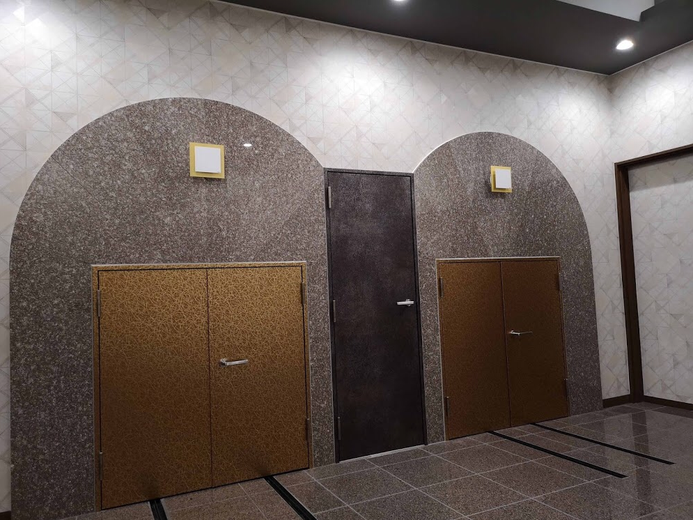
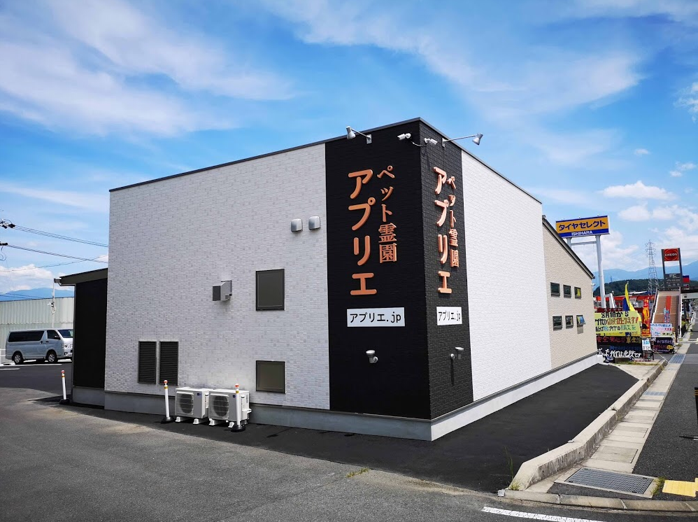

Aprier is the first dedicated pet cremetion place in Tono area in Gifu. We help you when your loved one passed away.
This is clean and peaceful inside sematary. Plase come to see your loved one anytime during the business hour.
It is along government road 19 in Nasubigawa. From Ena, you can enter directry from the road. From Nakatsugawa, turn right at Nishisuwa intersection in front of Valor Home Center, turn left next intersection, and drive down 300m. We have 2 parking areas avairable for 15 cars.
We set up the altar. Please tell us in the first meeting or on phone if you would need.